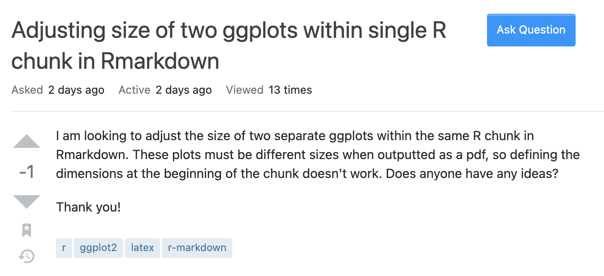

─ Session info ───────────────────────────────────────────────────────────────
setting value
version R version 4.3.0 (2023-04-21)
os macOS Ventura 13.4
system aarch64, darwin20
ui X11
language (EN)
collate en_US.UTF-8
ctype en_US.UTF-8
tz Australia/Melbourne
date 2023-07-26
pandoc 3.1.2 @ /usr/local/bin/ (via rmarkdown)
─ Packages ───────────────────────────────────────────────────────────────────
package * version date (UTC) lib source
cli 3.6.1 2023-03-23 [1] CRAN (R 4.3.0)
codetools 0.2-19 2023-02-01 [1] CRAN (R 4.3.0)
digest 0.6.33 2023-07-07 [1] CRAN (R 4.3.0)
evaluate 0.21 2023-05-05 [1] CRAN (R 4.3.0)
fastmap 1.1.1 2023-02-24 [1] CRAN (R 4.3.0)
htmltools 0.5.5 2023-03-23 [1] CRAN (R 4.3.0)
jsonlite 1.8.7 2023-06-29 [1] CRAN (R 4.3.0)
knitr 1.42 2023-01-25 [1] CRAN (R 4.3.0)
rlang 1.1.1 2023-04-28 [1] CRAN (R 4.3.0)
rmarkdown 2.21 2023-03-26 [1] CRAN (R 4.3.0)
sessioninfo 1.2.2 2021-12-06 [1] CRAN (R 4.3.0)
xfun 0.39 2023-04-20 [1] CRAN (R 4.3.0)
yaml 2.3.7 2023-01-23 [1] CRAN (R 4.3.0)
[1] /Library/Frameworks/R.framework/Versions/4.3-arm64/Resources/library
──────────────────────────────────────────────────────────────────────────────
ETC5523: Communicating with Data
Basic communication theory and practice
Lecturer: Michael Lydeamore
Department of Econometrics and Business Statistics
Aim
- Basic communication theory and its relevancy with communicating with data
- Demonstrate communication competency by selecting appropriate behaviour based on audience and self monitoring
- Identify and apply rhetorical elements to improve data storytelling
- Clearly articulate and express technical problems for others to help you
Why
- Effective communication with data is a blend of hard and soft skills
- You need the hard skills to process and understand the data
- But you also need the soft skills to get the message across to others
Communicating
To effectively communicate, we must realize that we are all different in the way we perceive the world and use this understanding as a guide to our communication with others.
– Anthony Robbins
Communicating with data
The two words ‘information’ and ‘communication’ are often used interchangeably, but they signify quite different things. Information is giving out; communication is getting through.
– Sydney J. Harris
The Basics of
Communication Theory
Communication here refers to human communication
In this section, communication refers to human communication.
Communication is symbolic
- Arbitrary nature of symbols is overcome with linguistic rules
- Agreement among people about these rules is required to effectively communicate
- Meanings rest in people, not words

Communication is a process
Communication is often thought of as discrete, independent acts but in fact it is a continuous, ongoing process.
Linear communication model
Transactional communication model
Communication competence
- There is no single, ideal way to communicate
- Competence is situational and relational (where, what and who)
- Ability to select the most appropriate behaviour in a particular situation
- Skill to perform behaviour not just knowing them
- Empathy or perspective taking
- Cognitive complexity – ability to construct a variety of framework for viewing an issue
- Self-monitoring – paying close to your own behaviour and use this to shape your behaviour
Types of communication
- Intrapersonal – communicating with one-self
- Dyadic/interpersonal – two people interacting
- Small group – two or more people interacting with group membership
- Public – a group too large for all to contribute
- Mass – messages transmitted to large, wide-spread audiences via media
Tutorial
How does your communication strategy change for different types of communication?
Effective communication
- Communication doesn’t always require complete understanding
- We notice some messages more and ignore others, e.g. we tend to notice messages that are:
- intense,
- repetitious, and
- constrastive.
- Motives also determine what information we select from environment
Rhetorics
The art of effective or persuasive speaking or writing
Rhetorical Triangle

Rhetorical Situation
Writer or Speaker
Purpose
Message
Audience
Context
No one ever made a decision because of a number. They need a story.
– Daniel Kahneman
Maybe stories are just data with a soul.
– Brene Brown
Hans Rosling
Communicating your problem
Asking for help, requires you to communicate what your problem is to another party.
How you communicate your problem, can assist you greatly in getting the answer to your problem.
🆘 Asking for help 1 Part 1
- What do you think about the question below?

🆘 Asking for help 1 Part 2
- What do you think now?
I am looking to adjust the size of two separate ggplots within the same R chunk in Rmarkdown. These plots must be different when outputted as a pdf, so defining the dimensions at the beginning of the chunk doesn’t work. Does anyone have any ideas? My code is below.
🆘 Asking for help 1 Part 3
- Is this better?
I am looking to adjust the size of two separate ggplots within the same R chunk in Rmarkdown. These plots must be different when outputted as a pdf, so defining the dimensions at the beginning of the chunk doesn’t work. Does anyone have any ideas? My code is below.
🆘 Asking for help 1 Part 4
- Okay better now?
I am looking to adjust the size of two separate ggplots within the same R chunk in Rmarkdown. These plots must be different when outputted as a pdf, so defining the dimensions at the beginning of the chunk doesn’t work. Does anyone have any ideas? My code is below.
🆘 Asking for help 1 Part 5
- Are we done now?
I am looking to adjust the size of two separate ggplots within the same R chunk in Rmarkdown. These plots must be different when outputted as a pdf, so defining the dimensions at the beginning of the chunk doesn’t work. Does anyone have any ideas? My code is below.
❓ How to ask questions?
Checklist (note: not an exhaustive checklist)
If the question is asked in an public forum or similar:
If the problem is computer system related…
If the problem is based on data …
🆘 Asking for help 1 Check
🆘 Asking for help 2
- How about the question on the right?
- What makes it hard or easy for people to answer this question?


Session Information
You can easily get the session information in R using sessioninfo::session_info().
Scroll to see the packages used to make these slides.
🎁 Reproducible Example with reprex LIVE DEMO
- Copy your minimum reproducible example then run
- Once you run the above command, your clipboard contains the formatted code and output for you to paste into places like GitHub issues, Stackoverflow and forums powered by Discourse, e.g. RStudio Community.
- For general code questions, I suggest that you post to the community forums rather than Moodle.
Communicating with Data

Week 1 Lesson
Summary
- Communication is a symbolic, ongoing process that requires getting through to other parties
- There is no single ideal way to communicate – communication competence depends on situation and relations but a competent communicator can select and perform appropriate behaviour based on seeing other people’s perspectives and understanding their own behaviour
- We discussed about the elements of rhetorics and how it relates to telling a compelling data story
- We looked at the case study with communicating your problem to ask for help
Week 1 Lesson
Resources
- See more at Learn R Chapter 3: Troubleshooting and asking for help
- Watch more about storytelling with data at:

ETC5523 Week 1